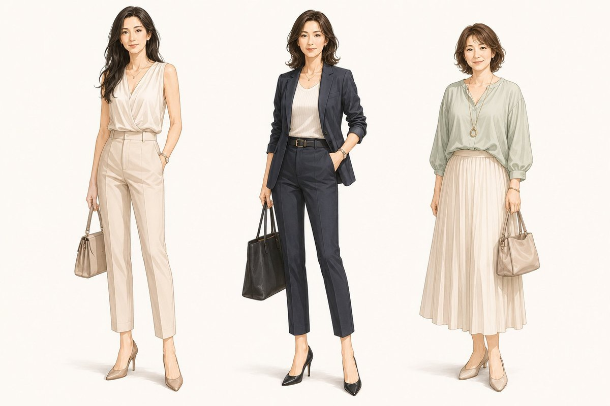
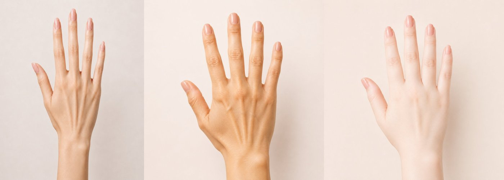

体質学基礎Ⅰ ／ Foundation
体質類型の理論、タイプの見分け方、そして現場での活かし方まで。すべての回の土台となる、体質学のはじめの一歩です。
「同じケアをしているのに、お客様によって結果が違う」——その理由のひとつが、生まれ持った"体質"の違いです。体質学基礎Ⅰでは、人を3つの体質類型（外胚葉・中胚葉・内胚葉）でとらえる考え方を学び、顔立ちや体つき、手の形といった"見た目に表れるサイン"から、お客様の体質を見極める目を養います。


体質学は、誰もが「自分のこと」としてとても興味を身を引く内容です。
顔や手の形を見て体質がわかると、「へー、どうしてわかるの？」という驚きが生まれます。その小さな"なぜわかるの"が、お客様との距離を一気に縮めていきます。
けれど、本当の価値はその先にあります。会話の中で「お客様はこういう傾向がありますよね？」「こんなお悩み、ありませんか？」とさりげなくポイントを指摘できると、お客様は「そんなに私のことをわかってくれるの」と感じます。"わかってくれる人"からの提案は、受け入れやすくなります。
結果として、サロンへの信頼は確実に高まり、サロンそのものの価値が格段に上がります。そして、その信頼は、おすすめした商品やケアの売上にも自然につながっていきます。体質学は、知識であると同時に、お客様との関係を深める"会話の武器"になるのです。
パーソナルケアにこだわるサロンの方、カウンセリングや日々の会話にもう一段の深みを持たせたい方におすすめの回です。カウンセリングが得意になります。
体質学基礎Ⅱ・Ⅲ・Ⅳは、この体質学基礎Ⅰの受講を前提としています。まずはこの回から始めてください。
お客様を「見極める目」を養う、はじめの一歩。下のボタンから、お申し込みいただけます。
お申し込みはこちら →日程はお申し込みページでお選びいただけます。